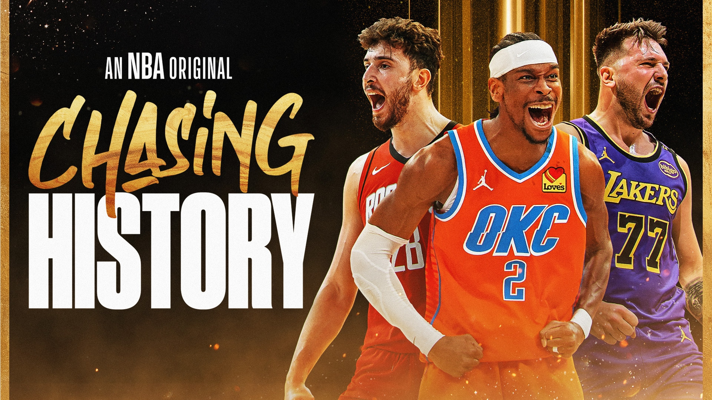
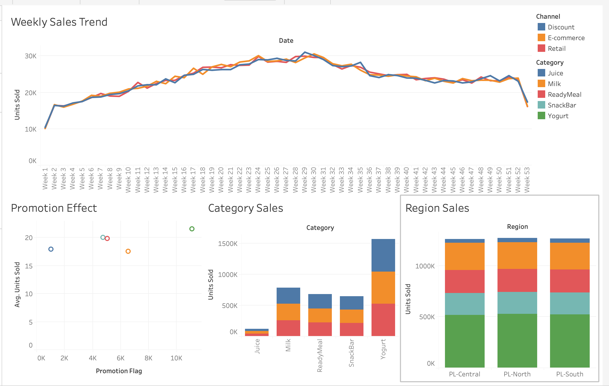
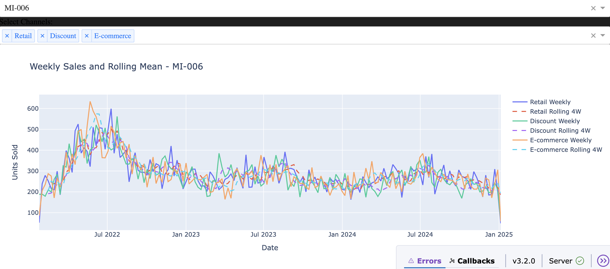
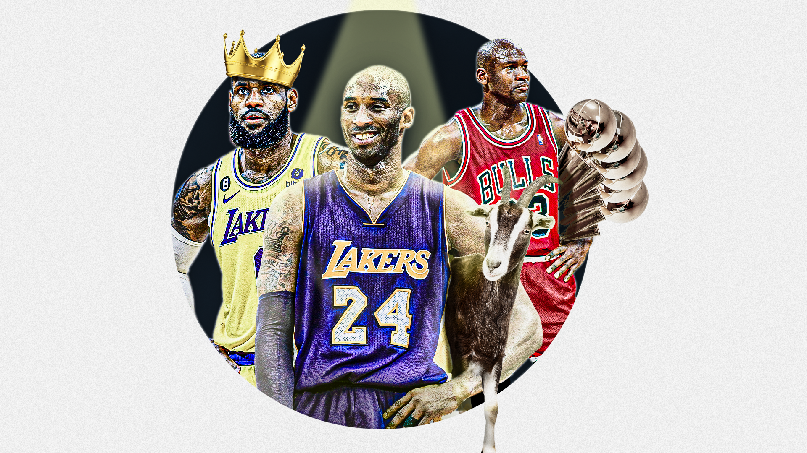
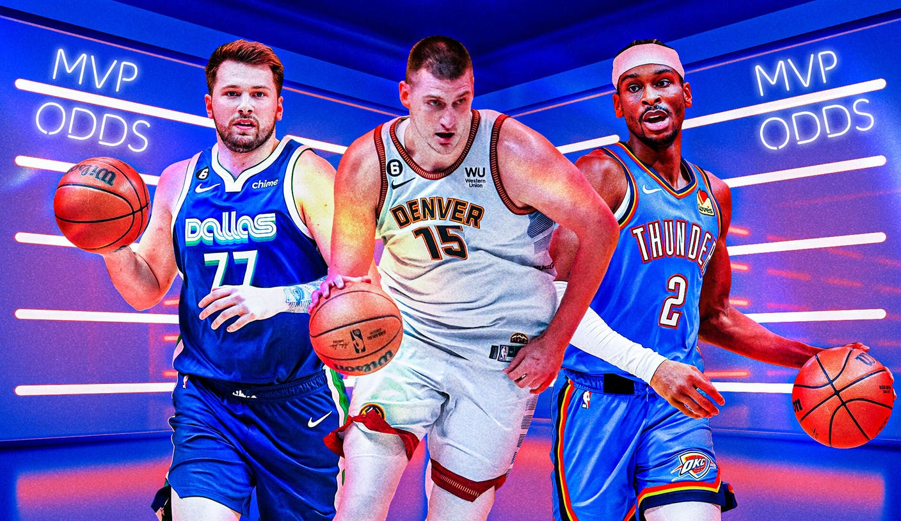
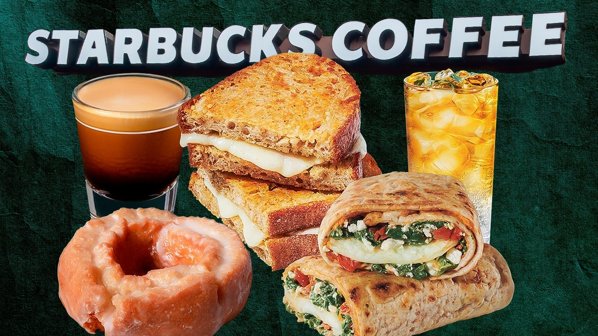

In this project, I analyzed 2024–25 NBA playoff and play-in matchups using the NBA API,
focusing on team strengths, key player matchups, and regular season performance comparisons.
I visualized the insights using Python to highlight competitive advantages.


This project is a deep learning application developed using TensorFlow 2. The goal is to build a model that classifies bottles in images, videos,
or camera streams by type. The project also includes experimentation with different model trainings,
visualization of results, and analysis of performance metrics.

This project combines SQL, Python, and Tableau to analyze and visualize retail sales data.
The workflow demonstrates end-to-end data handling, from database creation to interactive dashboards.
Key Highlights:
• Python script: Created a MySQL database and loaded raw FMCG sales CSV data.
• SQL queries: Performed analysis such as total sales trends, category-level performance, and channel/region breakdowns.
• Tableau dashboard: Built an interactive dashboard to visualize sales performance across channels, categories, and regions.

In this project, I analyzed historical FMCG sales data to identify weekly sales trends and applied time-series forecasting to predict future demand. Using Facebook Prophet,
I modeled seasonality and generated an 8-week forecast, which can support business planning and inventory management decisions.
Key Highlights:
• Preprocessed and aggregated raw sales data into weekly trends.
• Applied rolling averages to smooth seasonality effects.
• Built a Prophet forecasting model with weekly and yearly seasonality.
• Visualized both historical sales and future predictions.

Developed an interactive dashboard to analyze weekly sales trends for FMCG products per SKU and sales channel. The dashboard visualizes 4-week rolling averages,
enabling trend smoothing and easier identification of sales patterns. Built using Python, Pandas, Matplotlib, and Plotly Dash, it includes multi-select dropdowns
for SKUs and channels, with hover details showing date, units sold, SKU, and channel.

In this project, I compared five of the greatest NBA players of all time using both modern and historical stats from the NBA API and award data from Wikipedia.
I developed a custom metric to evaluate their all-around impact and visualized the results to support the final comparison.

In this project, I analyzed the top MVP candidates of the 2023–24 NBA regular season using NBA API data.
I compared their statistical performance, consistency, and impact metrics, and visualized the comparisons to identify the strongest contenders.

In this project, I analyzed the nutritional values of Starbucks food items to explore category patterns and calorie distribution. I then built a machine learning model to classify food types (bakery, hot breakfast, lunch, etc.)
based on their nutritional features using algorithms like Decision Tree and Logistic Regression.

Using the Spotify API, audio features and genre data were extracted from user playlists. These were matched with a 1-million-song dataset from Kaggle to identify songs similar to the playlist. A content-based machine learning model then recommended 10 new songs tailored to the user’s taste. The project combines data analysis, visualization, and recommendation systems to personalize music discovery through technology.